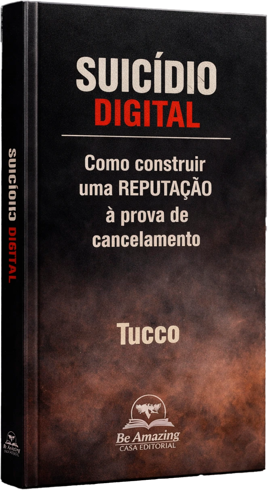
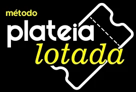
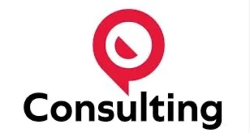
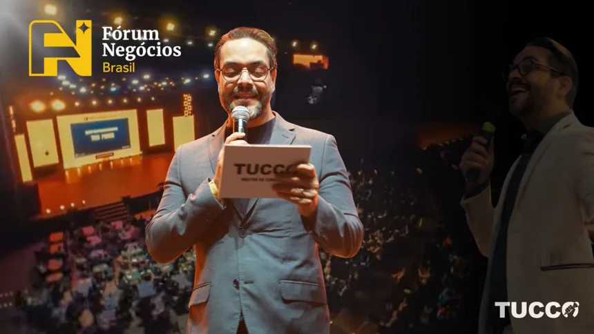
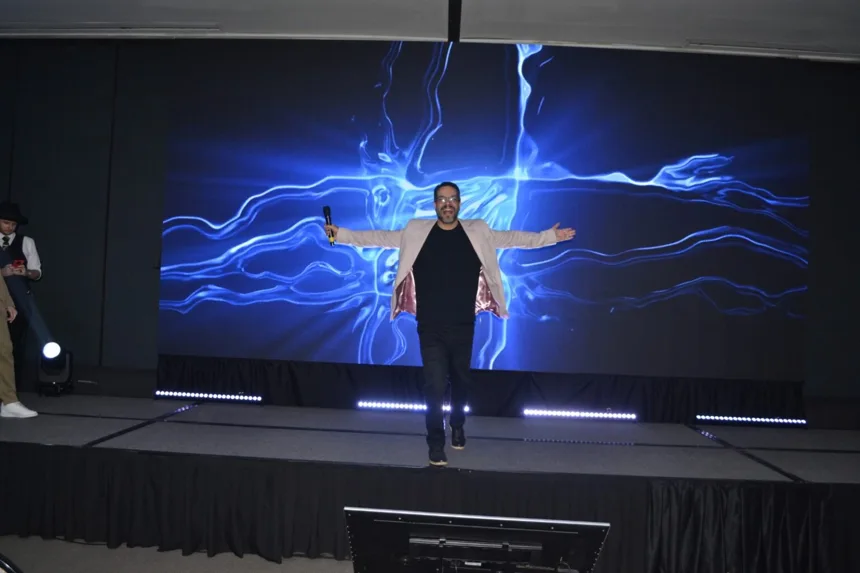
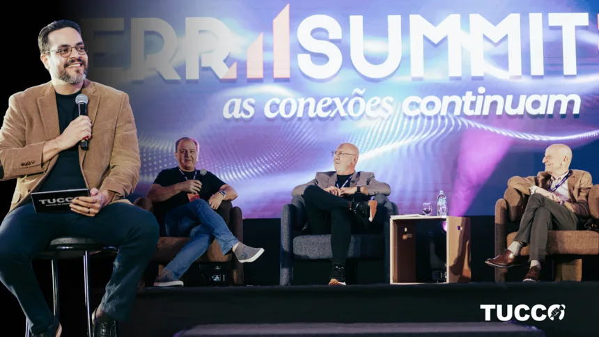
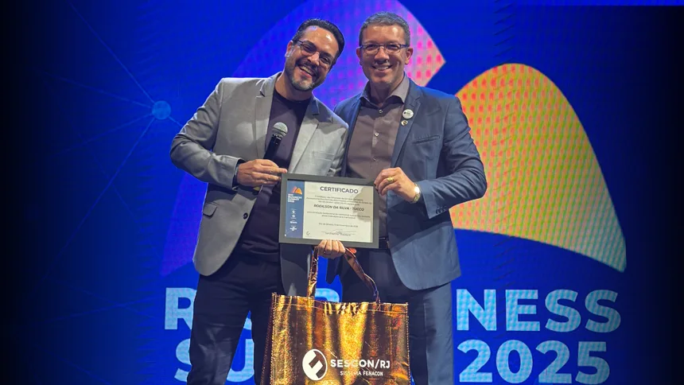

Reputação e gestão de crises
Suicídio Digital
Como construir uma reputação à prova de cancelamento?
Consultar palestraReputação digital, vendas e carreira na comunicação. Uma conversa que começa no palco.
Conheça as palestras
Palestrante, escritor, apresentador de TV e podcaster. Tucco leva a experiência de centenas de eventos para conversas sobre reputação, vendas e carreira.

O que acontece com uma carreira quando uma postagem passa a definir a pessoa por trás do nome?
Tucco examina como exposição, cancelamentos e falhas de comunicação afetam profissionais e empresas e discute como cuidar da reputação antes de uma crise.
Consultar o livro




Do primeiro anúncio à reação da plateia, acompanhe o trabalho de Tucco em cena.
"Mestre de cerimônias é o grande pilar que sustenta um evento, e nesse sentido garanto que trabalhar com o nosso querido Tucco faz toda diferença. Com comprometimento, profissionalismo e leveza, ele eleva o ambiente e mantém a energia e organização no mais alto patamar! Tudo que um evento preciso para poder entregar ao máximo para sua plateia. Sem dúvida um dos melhores mestres de cerimônia com quem já tive a satisfação de trabalhar!"
"A atuação do Tucco como Mestre de Cerimônias (MC), vai muito além do formato tradicional de simplesmente anunciar os convidados. Ele faz introduções poderosas aos temas, traz reflexões após as apresentações e gera interações para manter a atenção e energia do público. Tudo isso alinhado com o objetivo do evento e as expectativas dos contratantes. Em minha experiência como Palestrante Profissional, percebo claramente a imensa diferença que faz, quando temos um profissional habilidoso como o Tucco realizando a condução do evento."
"Nos últimos dois anos, o Tucco assumiu o papel de mestre de cerimônias, e tem sido simplesmente brilhante. Com sua mistura única de irreverência, carisma e pontualidade, ele tem conduzido o público com leveza, energia e profissionalismo. Tucco, obrigado por ser parte dessa jornada e por contribuir de forma tão marcante para o sucesso dos nossos eventos. Que venham muitos outros capítulos dessa parceria de alto nível!"
"Trabalhar com o Tucco nas nossas convenções tem sido sempre uma experiência incrível. Ele não só tem uma presença de palco imbatível, mas também uma habilidade única de conectar palestrantes, momentos e público com leveza e profissionalismo. Seu tom de voz amigável e a forma como ele entra em flow no palco tornam cada evento mais agradável e impactante. Já o trouxemos várias vezes para eventos do nosso grupo, e a cada vez ele supera as expectativas. Tucco é, sem dúvida, um profissional de confiança, com um coração enorme. Super recomendo!"
"Pensa num mestre de cerimônias que vai além do óbvio: esse é o Tucco. Já tive a oportunidade de palestrar em eventos onde o Tucco estava ali no palco fazendo seu trabalho, e o que pude presenciar foi um profissional que não apenas lê um currículo, chama pro palco e anuncia a próxima atração. Ele anima, interage, energiza a plateia. Ele traz contextos do conteúdo apresentado pelo palestrante para debater sobre. Ele questiona, instiga, empolga, é um verdadeiro showman! Recomendo demais o trabalho do Tucco e qualquer empresa ou evento que o contratar como mestre de cerimônias vai entender bem esse meu relato!"




Conte a data, a cidade e o perfil do público para solicitar uma proposta.
Solicitar proposta pelo WhatsAppComo construir uma reputação à prova de cancelamento?
Consultar palestraPor que alguns profissionais vendem mais antes mesmo de apresentar uma proposta?
Consultar palestra
O que separa quem apresenta de quem realmente domina o palco?
Consultar palestraAntes de subir ao palco como palestrante, Tucco já conhecia o outro lado do microfone. Como mestre de cerimônias e entrevistador, aprendeu a ler a plateia, conduzir conversas e dar ritmo a encontros que reúnem públicos muito diferentes.
Escritor, apresentador e mentor em oratória, leva essa experiência às palestras sobre vendas, comunicação e reputação digital. É também o autor de Suicídio Digital, livro sobre o impacto da exposição na internet na vida profissional.
Contratar minha palestra